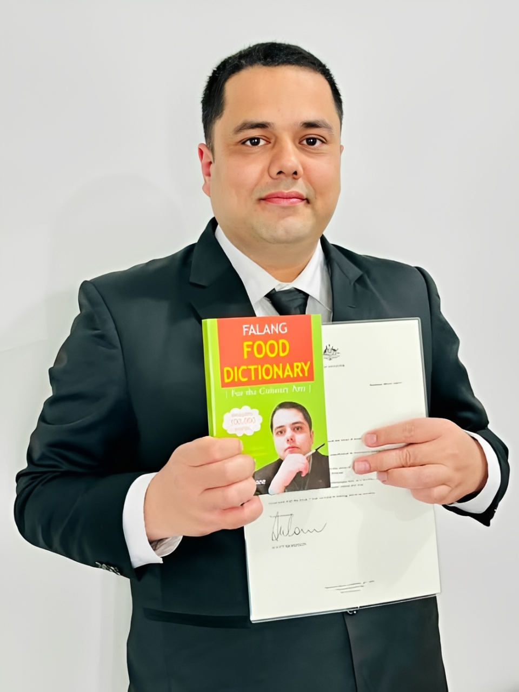

The Man Behind The Words

Shiva Neupane is a Nepali-born, Melbourne-based author, journalist, and lexicographer with over two decades of writing experience. Born in Galyang, Syangja, Nepal, he is now a permanent resident of Australia, living in Melbourne with his wife Devi Neupane Gaihre and their two daughters, Devyanshi and Saanvi.
His landmark work — the Falang Food Dictionary — made history as Nepal's first ever food dictionary, a groundbreaking culinary reference now used in Nepal's public school curriculum and recognised internationally at culinary festivals around the world.
He is the first Nepali citizen in Australia to contribute to The Age, one of Australia's most prestigious newspapers, and the first international student in Australia to compile a dictionary. His writing has appeared in publications across Australia, Nepal, India, USA, and Bangladesh.
Awarded for extraordinary contributions as an outstanding personality in the Nepalese diaspora in Australia
Appointed by The Daily Global Nation, an international newspaper based in Bangladesh
Received a personal letter from the Honourable Scott Morrison, former Prime Minister of Australia, in recognition of the Falang Food Dictionary in 2022
Compiler of Nepal's first ever food dictionary — now part of Nepal's public school curriculum
First international student in Australia to compile a dictionary and first Nepali citizen to write for The Age newspaper
Works held in Tribhuvan University Central Library — Nepal's most prestigious university
Shiva begins writing articles for various publications including The Himalayan Times and The Kathmandu Post — the start of a 25+ year writing career.
Publishes My Waves — his debut collection of English poems and the beginning of a remarkable literary journey.
Publishes In the Pursuit of Utopian Life in Australia — a deeply personal novel exploring the immigrant experience. Now held in Tribhuvan University Central Library, Nepal.
Publishes The Elixir of My Voice — an anthology of English poems continuing his poetic journey.
Publishes the Falang English Dictionary — becoming the first international student in Australia to compile a dictionary.
Publishes the Falang Food Dictionary — the first food dictionary ever compiled in Nepal containing over 100,000 words covering global and Nepali cuisines.
The Honourable Scott Morrison, former Prime Minister of Australia, issues Shiva a personal letter recognising his Falang Food Dictionary and its cultural contribution.
Publishes the second edition of the Falang Food Dictionary — now part of Nepal's public school curriculum and gaining global recognition.
Appointed International Peace Ambassador by The Daily Global Nation. Awarded the prestigious Prithivi Excellence Award for extraordinary contributions to the Nepalese diaspora in Australia.
Australia's prestigious newspaper — first Nepali citizen to contribute
Featured on Australia's multicultural broadcaster
Nepal's national daily newspaper
Nepal's national daily newspaper
International literary publication, USA
International literary magazine, India
International literary publication, USA
International newspaper, Bangladesh
Sydney-based Nepali community magazine